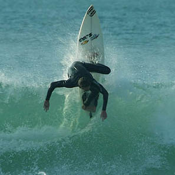
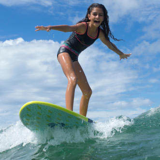
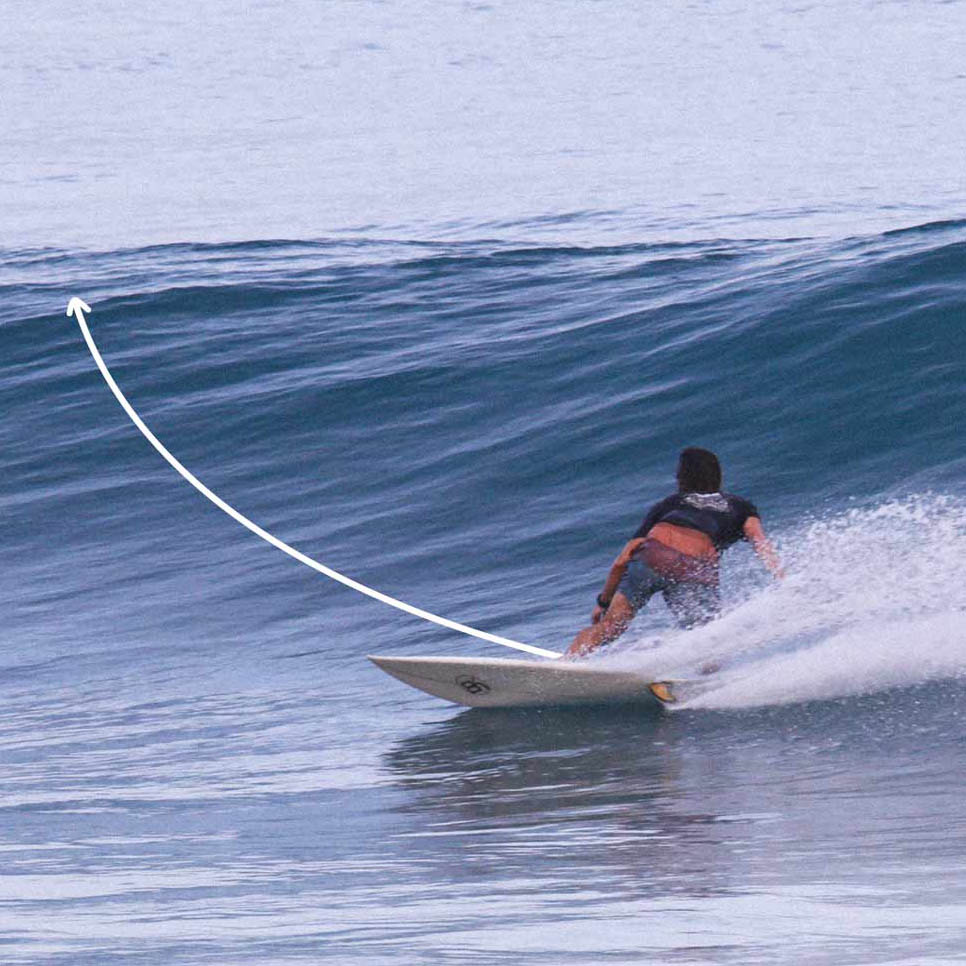
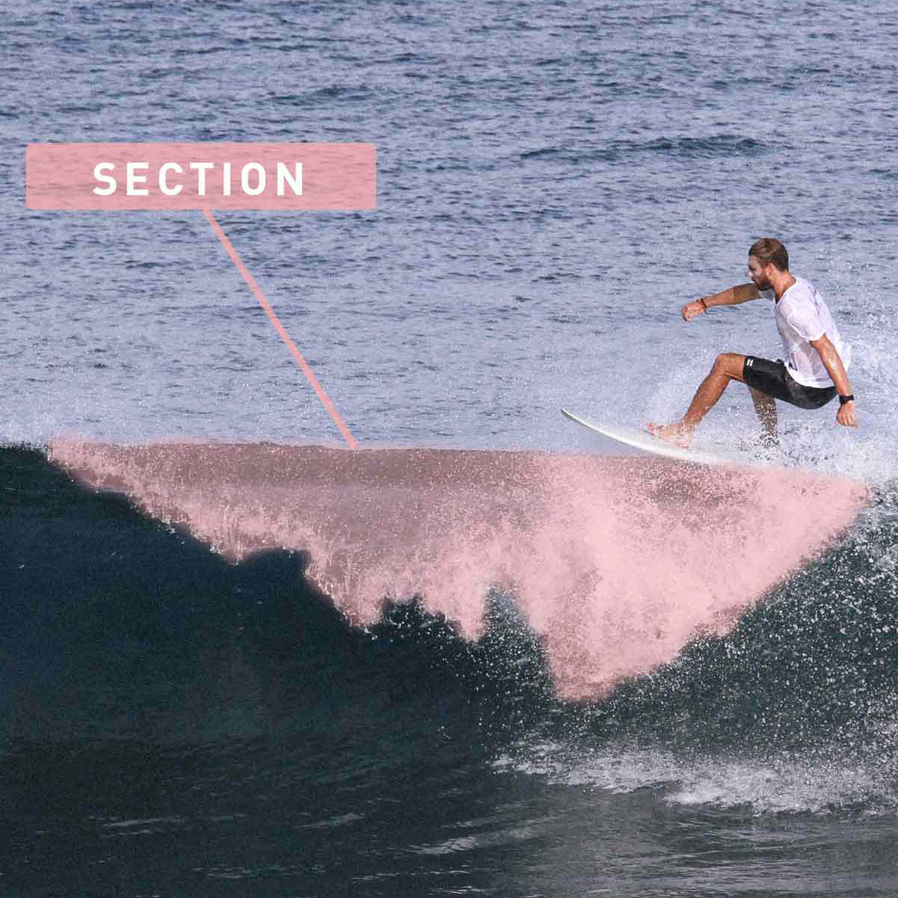
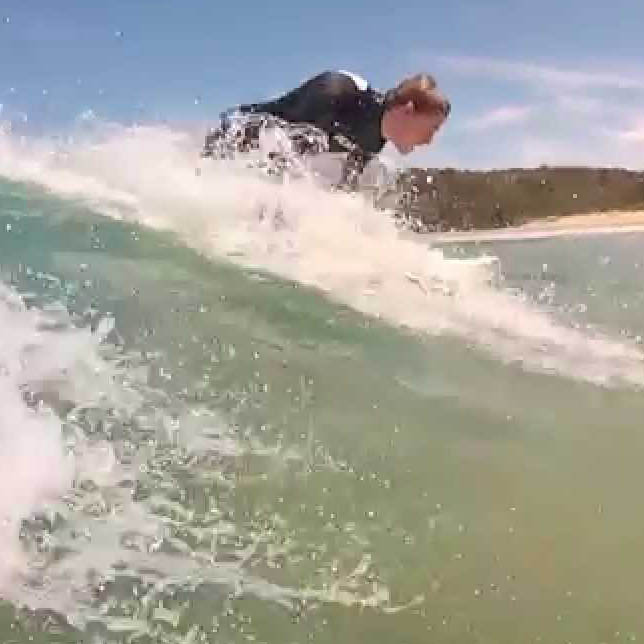
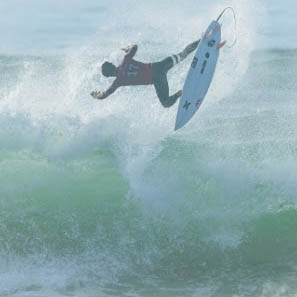

Figures Manoeuvres
Regardez les photos suivante et cliqué dessus pour plus de détails
-  Le Roller
-  Le Take-Off
-  Le bottom turn
-
 Le Cut Back
Le Cut Back
 x Close
x CloseLe Cut Back/əˈdäjō/
Beaucoup de vitesse est nécessaire, le cut back est une figure horizontale qui consiste à revenir vers le point de déferlement de la vague, et faire un contre virage pour aller dans le sens de celui-ci.
-  Le Floater
-  Le snap back
-
 Le Lay back
Le Lay back
-
 Le tube
Le tube
 x Close
x CloseLe tube/pēˈkā/
Strongly pointed toe of the lifted and extended leg sharply lowers to hit the floor then immediately rebounds upward
-  L'Aerial
-
 Ballerina
Ballerina